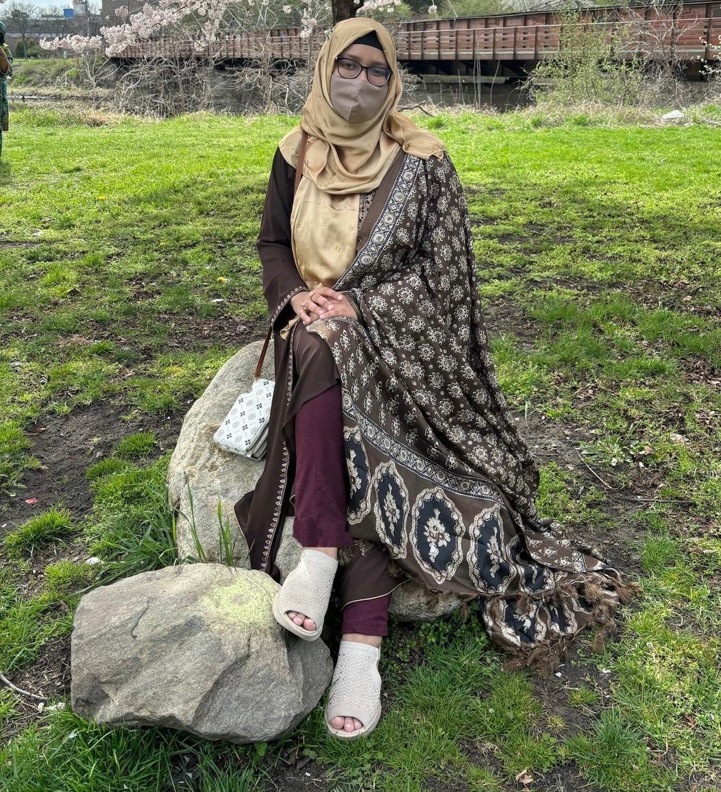
Hi there 👋, I'm
Samia Islam
PhD Student, Computer Science and Engineering
Michigan State University
I am a Ph.D. student in the Department of Computer Science and Engineering at Michigan State University, advised by Dr. Sudin Bhattacharya and co-advised by Dr. Zijun Cui. My research explores dynamical systems approaches to understanding single-cell behavior, with a focus on characterizing cellular dynamics and the underlying processes that drive changes in cell states.
Education
- Ph.D., Computer Science and EngineeringMichigan State University, East Lansing, MI · Ongoing
- B.Sc., Computer Science and EngineeringIslamic University of Technology (IUT), Bangladesh
Research Interests
- Dynamical Systems Theory
- Single-Cell Transcriptomics
- Deep Learning
Selected Publications
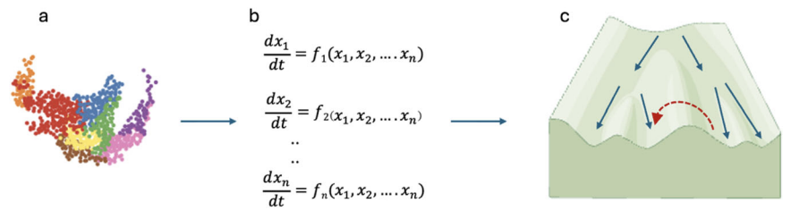
Dynamical systems theory as an organizing principle for single-cell biology
Samia Islam, Sudin Bhattacharya
npj Systems Biology and Applications, 2025
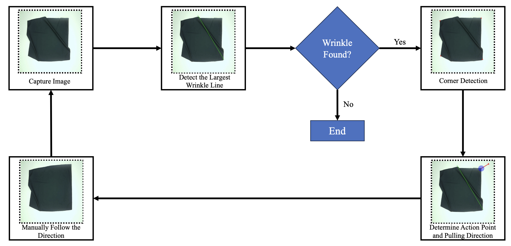
Samia Islam, Charles Owen, Ranjan Mukherjee, Ira Woodring
PETRA '24: Proceedings of the 17th International Conference on PErvasive Technologies Related to Assistive Environments
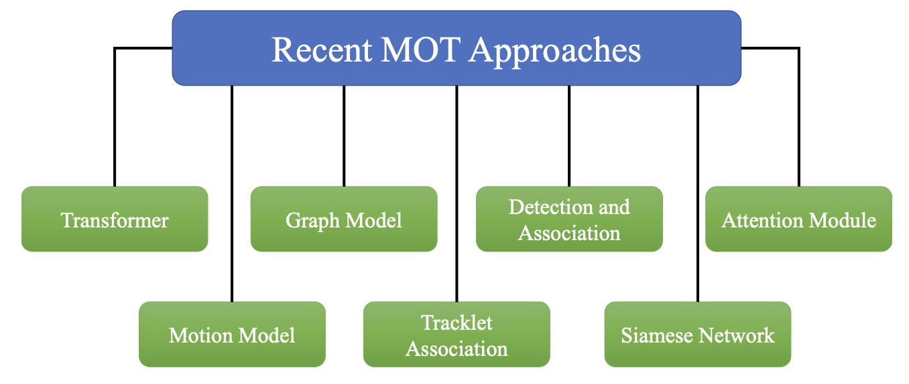
Multiple Object Tracking in Recent Times: A Literature Review
Mk Bashar*, Samia Islam*, Kashifa Kawaakib Hussain, Md. Bakhtiar Hasan, A.B.M. Ashikur Rahman, Md. Hasanul Kabir
arXiv preprint arXiv:2209.04796
Posters
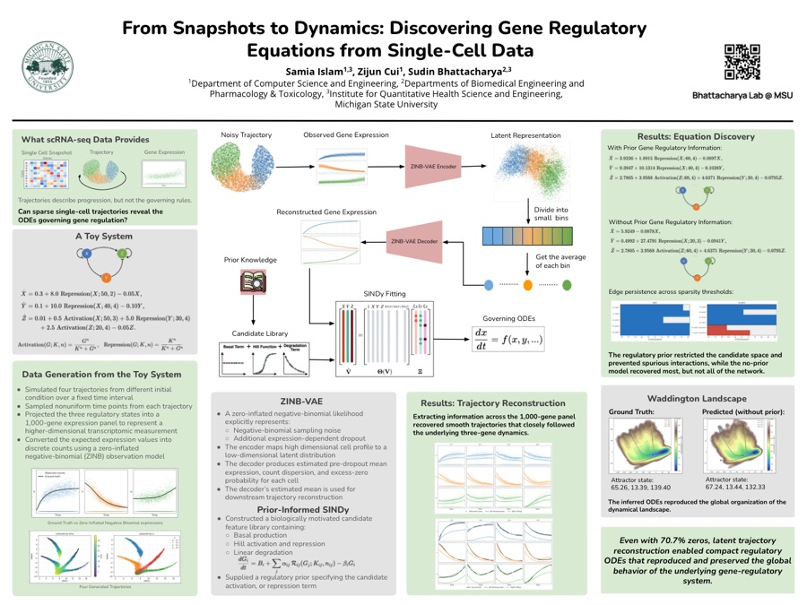
From Snapshots to Dynamics: Discovering Gene Regulatory Equations from Single-Cell Data
Samia Islam, Zijun Cui, Sudin Bhattacharya
Finding Your Inner Modeler (FYIM 2026)
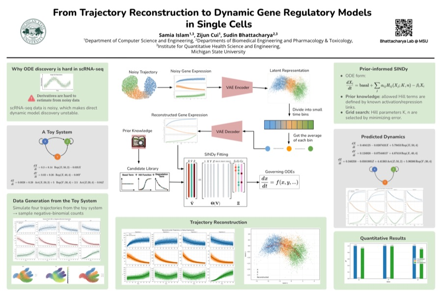
From Trajectory Reconstruction to Dynamic Gene Regulatory Models in Single Cells
Samia Islam, Zijun Cui, Sudin Bhattacharya
GGS Day 2026, Genetics and Genome Sciences Program, Michigan State University
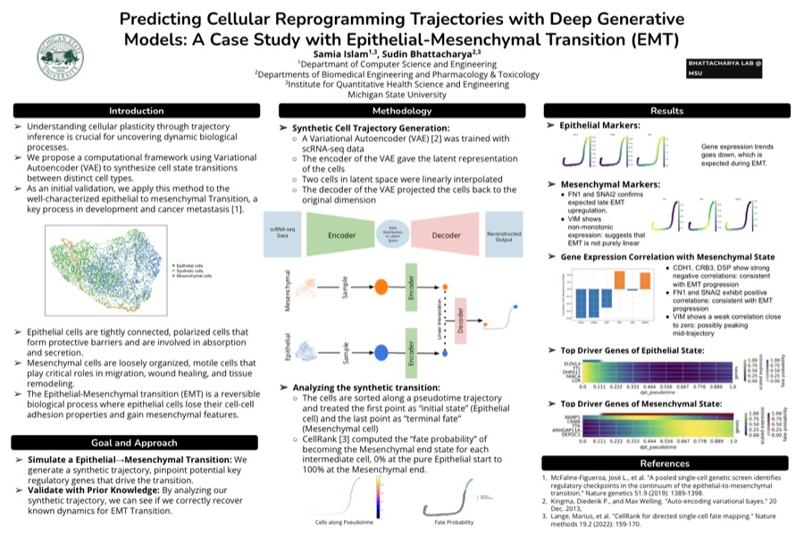
Predicting Cellular Reprogramming Trajectories with Deep Generative Models: A Case Study with Epithelial–Mesenchymal Transition (EMT)
Samia Islam, Sudin Bhattacharya
International Conference on Intelligent Biology and Medicine (ICIBM 2025), Ohio State University, Columbus, OH
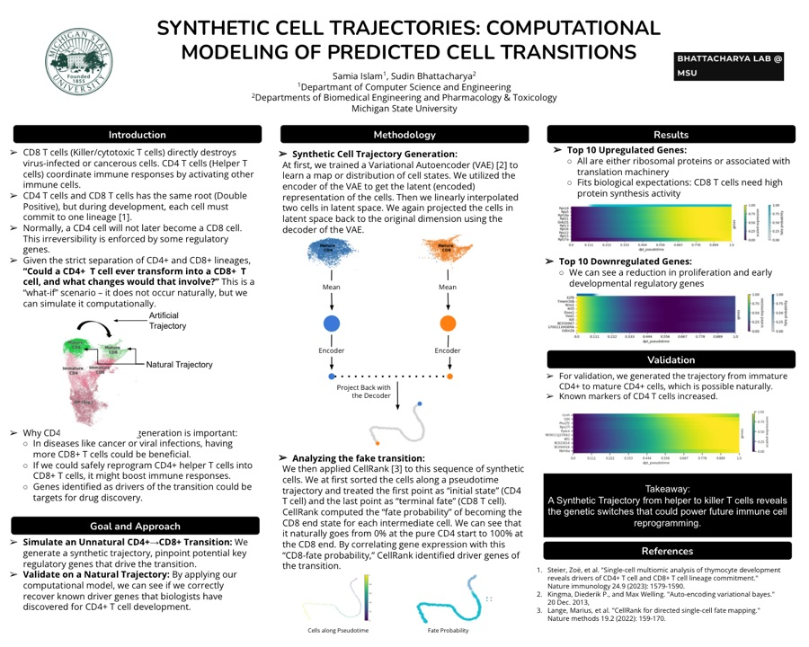
Synthetic Cell Trajectories: Computational Modeling of Predicted Cell Transitions
Samia Islam, Sudin Bhattacharya
Engineering Graduate Research Symposium 2025, Michigan State University
Talks
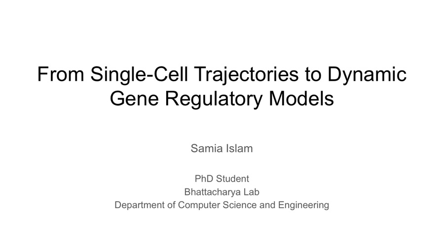
From Single-Cell Trajectories to Dynamic Gene Regulatory Models
Samia Islam
CSTMI Workshop, Michigan State University
Teaching
CSE 231: Introduction to Programming I
Teaching Assistant
Fall 2024 - Spring 2025
Responsibilities: conducting labs, providing office hours, creating projects for students, and proctoring exams.
CSE 260: Discrete Structures in Computer Science
Teaching Assistant
Fall 2023
Responsibilities: student monitoring, providing office hours, grading and proctoring exams.
News
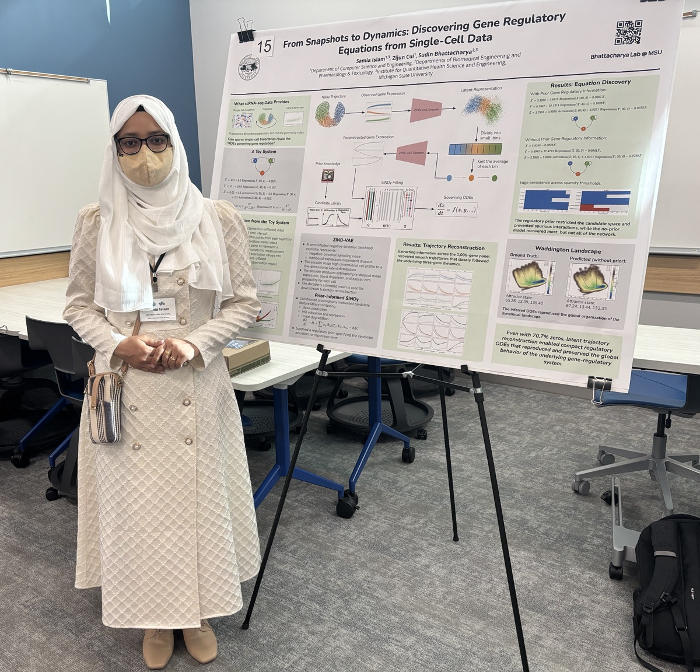
Attended FYIM 2026
I attended the Finding Your Inner Modeler Conference (FYIM 2026), where I presented my poster "From Snapshots to Dynamics: Discovering Gene Regulatory Equations from Single-Cell Data". View the poster.
August 6, 2026
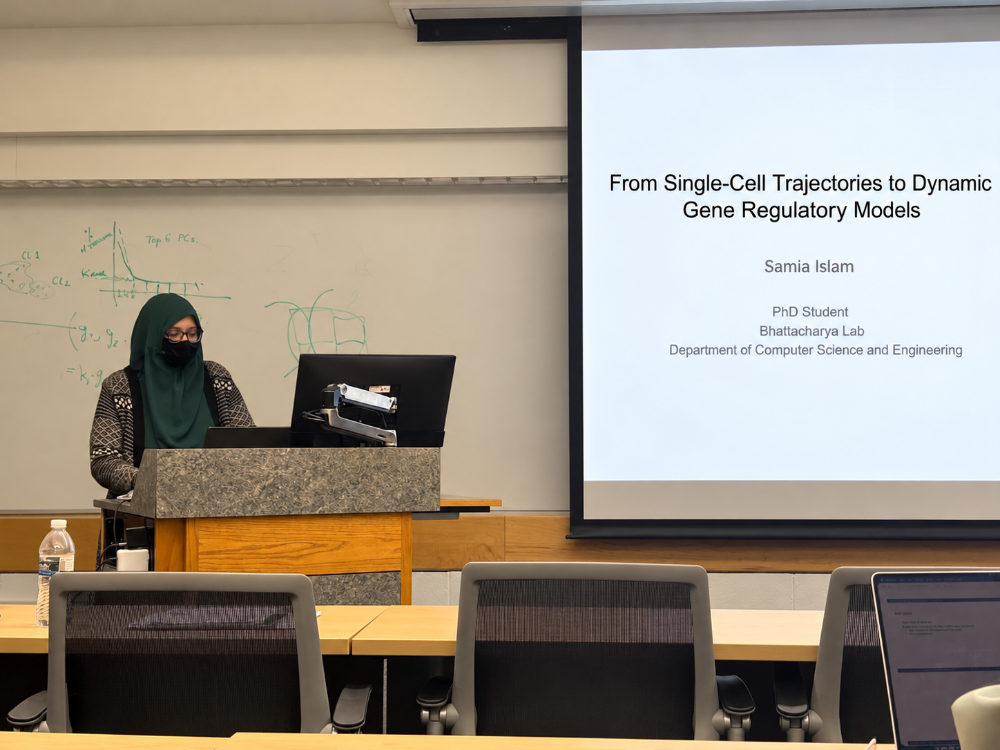
Gave a Talk at the CSTMI Workshop
I gave a talk titled "From Single-Cell Trajectories to Dynamic Gene Regulatory Models" at the CSTMI Workshop at Michigan State University. View the slides or read the news story.
May 2026
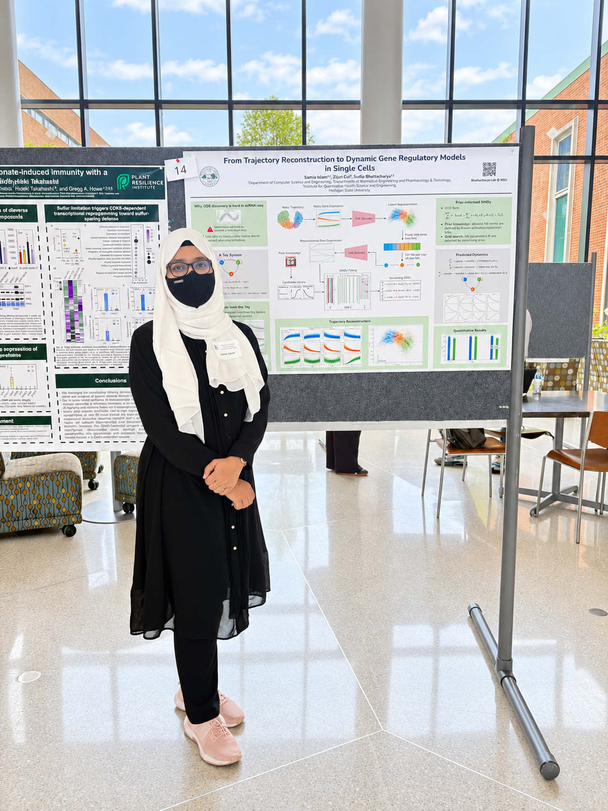
Presented Poster at GGS Day 2026
I presented my poster "From Trajectory Reconstruction to Dynamic Gene Regulatory Models in Single Cells" at GGS Day 2026, hosted by the Genetics and Genome Sciences Program at Michigan State University. View the poster.
May 5, 2026
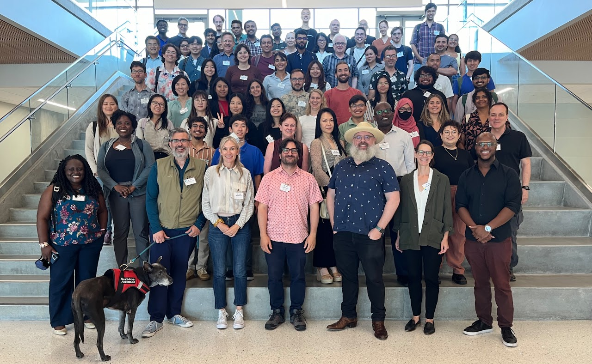
Attended FYIM 2025
I attended the Finding Your Inner Modeler Conference (FYIM 2025) at the University of California, Irvine.
August 7-8, 2025
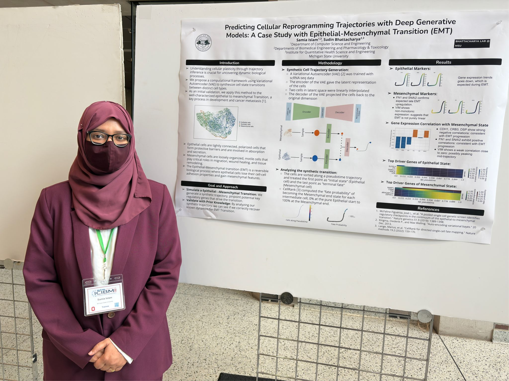
Presented Poster at ICIBM 2025
I presented my work as a poster titled "Predicting Cellular Reprogramming Trajectories with Deep Generative Models: A Case Study with Epithelial–Mesenchymal Transition (EMT)" at the International Conference on Intelligent Biology and Medicine (ICIBM 2025), Ohio State University, Columbus, OH. View the poster.
August 3-5, 2025
One Paper Got Published at npj Systems Biology and Applications Journal
My perspective paper, "Dynamical systems theory as an organizing principle for single-cell biology", got published in npj Systems Biology and Applications by Nature Portfolio.
August 1, 2025
Passed PhD Qualifier Examination
I passed the PhD Qualifier Examination under the committee composed by Dr. Kevin Liu, Dr. Wolfgang Banzhaf, and Dr. Hae-Na Lee. My examination topic was "Physics-informed Machine Learning (PiML) in Dynamical Systems". View the slides.
February 10, 2025
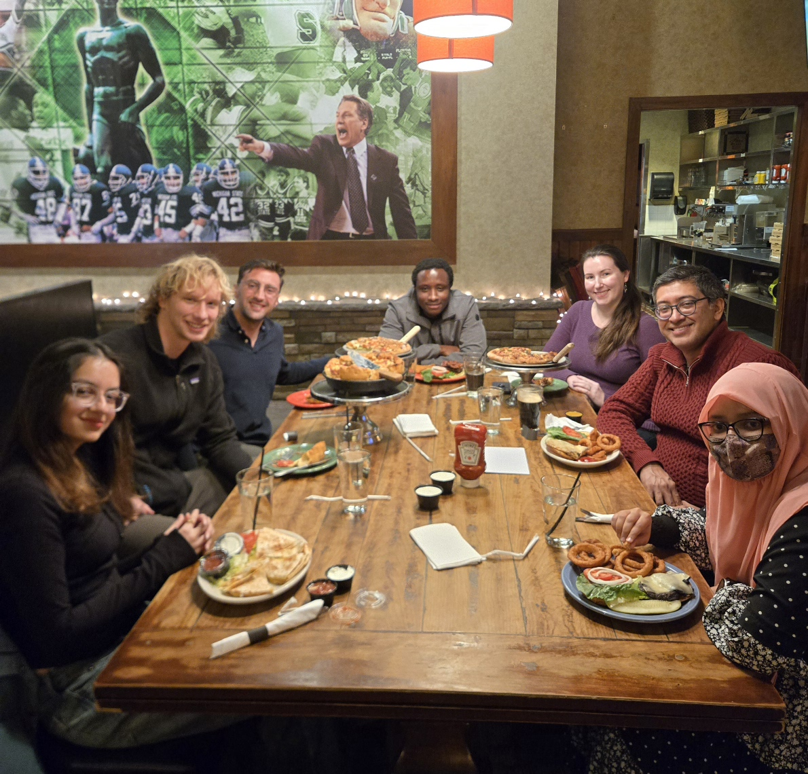
Joined Bhattacharya Lab
I joined the Bhattacharya Lab at Michigan State University as a PhD student. I will be working under Dr. Sudin Bhattacharya on Dynamical Systems in Single-Cell Genomics.
August 26, 2024
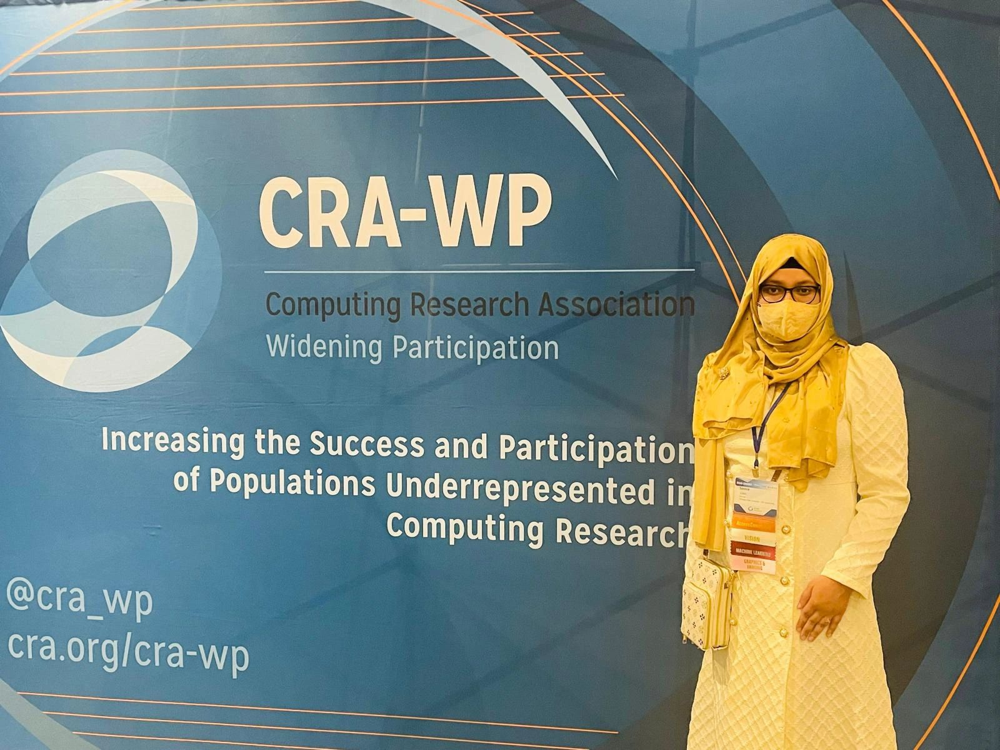
Attended CRA-WP Grad Cohort for Women 2024
I had the incredible opportunity to attend the CRA-WP Grad Cohort for Women in Minneapolis, Minnesota. It was an amazing experience where I connected with experienced female researchers and professionals in computing and academia.
April 12-13, 2024
Two Papers Accepted at PETRA 2024
Our papers on "Wrinkle Detection and Cloth Flattening" and "UML Class Diagrams with Audio" have been accepted at PETRA 2024! I am the first author of the paper titled "Wrinkle Detection and Cloth Flattening through Deep Learning and Image Analysis as Assistive Technologies for Sewing".
March 1, 2024
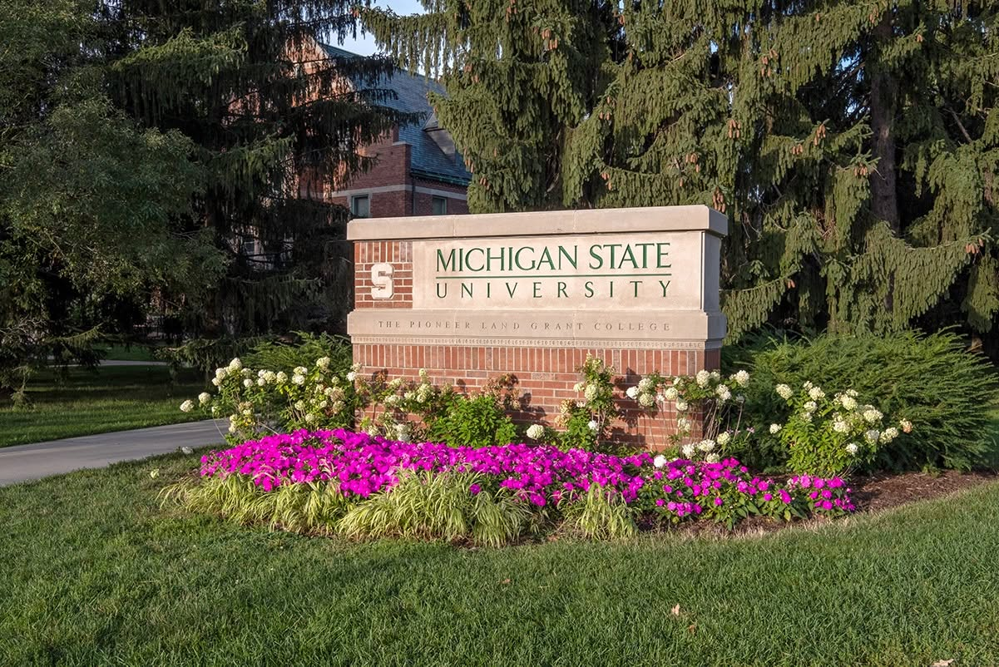
Started PhD at Michigan State University
I joined the Computer Science & Engineering department at Michigan State University as a PhD student. I will be serving as a Teaching Assistant as well.
August 15, 2023